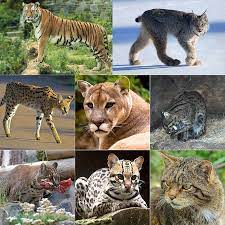
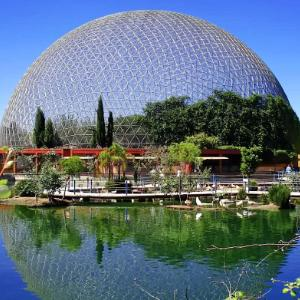

Mamíferos mayores
son una clase de animales vertebrados amniotas homeotermos (de sangre caliente) que poseen glándulas mamarias
productoras de leche con las que alimentan a las crías. La mayoría son vivíparos (con la excepción de los monotremas:
ornitorrinco y equidnas).

Reptiles
son un grupo de animales vertebrados amniotas provistos de escamas epidérmicas de queratina. Se trata de una clase
propia de la taxonomía tradiciona

Felinos
Los félidos o comúnmente llamados felinos son una familia de mamíferos placentarios del orden Carnivora. Poseen un
cuerpo esbelto, oído agudo, hocico corto y excelente vista. Son los mamíferos cazadores más sigilosos. La mayoría
consume exclusivamente carne e ignora cualquier otra comida que no sea una presa viva.

Aviario
es una gran jaula para encerrar aves. Al contrario de las jaulas de pájaros, los aviarios permiten a las aves un mayor
espacio para volar. Estos a menudo contienen plantas y arbustos que logran la simulación de un hábitat natural
 Nuestro Historia
Nuestro Historia